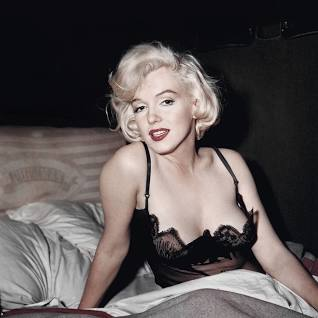

Norma Jeane Mortenson, later called Norma Jeane Baker, but famously known as "Marilyn Monroe", born June 1, 1926, Los Angeles, California, U.S. was an american actress who became a major sex symbol, starring in commercially successful films duing the 1950s.
The pop culture icon is famously known for her movies, some of which are "Gentlemen prefer blondes", "The seven year itch", amonst others. Miss Monroe's 23 movies grossed a total of more than $200 million, and her fame surpassed that of any other entertainer of her time. She is also famously known for conspiracies about her and former president "John F Kenedy's" affair. On the 4th of August 1962, Marilyn Monroe died at the age of 36 due to barbiturate overdose inside her home at 12305 Fifth Helena Drive in Brentwood, Los Angeles, California.Facts about Marilyn Monroe